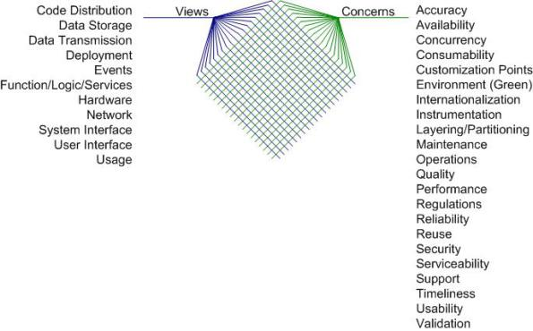

�
»
»
初期の要求構想
方向付けフェーズ
初期の要求構想
初期の要求における詳細レベル
- Big Requirements Up Front (BRUF:詳細な仕様)
- 要求構想（ポイントを押さえた少量の仕様）
- ゴール駆動
- モデリングしない
要求モデリングの選択肢
- ビジネスプロセス／データフロー図
- ビジネスルール
- 制約(Constraint)
- コンテキスト図
- ドメインモデル／概念モデル
- エピック(Epic)
- 機能一覧(Feature statements)
- フローチャート
- マインドマップ
- 非機能要求(NFR)
- ペルソナ
- 要求事項(Shall statement)
- UIフロー図／ナビゲーションマップ／ストーリーボード
- UIプロトタイプ（高精度）
- UIプロトタイプ（低精度）／手書きのスケッチ
- UI仕様書
- UMLアクティビティ図
- UMLユースケース図
- 利用シナリオ(Usage scenario）
- ユースケース仕様書
- 状態遷移図(State diagram)
- ユーザーストーリー(User stories)
- バリュー・ストリーム・マップ(Value stream map)
要求の獲得戦略
- 公式モデリングセッション
- 非公式のモデリングセッション
- インタビュー
ワークアイテムの管理方針
- 公式の変更管理
- スクラム・プロダクト・バックログ(Scrum product backlog)
- ワークアイテムスタック(Work item stack)
- ワークアイテムプール(Work item pool)
- 戦略なし
非機能要求の獲得戦略の比較
- テクニカルストーリー(Technical stories)
- 受け入れ基準(Acceptance criteria)
- 明示的なリスト(Explicit List)
- 戦略なし

目的
作業内容
機能要求
概要説明
レベル感
モデリング方法
モデリング戦略
非機能要求
概要説明
方法
ワークアイテムの管理
概要説明
方法